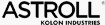

필름/전자재료
폴리에스터 필름
ASTROLL®은 코오롱인더스트리㈜가 섬유사업 일변도에서 탈피하고 미래지향적인 사업을 끊임없이 연구 개발하는 과정에서 섬유 부분에서 축척해온 기술을 바탕으로 자체 기술개발에 의해 탄생된 Polyester 필름 입니다.
ASTROLL®은 뛰어난 물리적, 화학적, 전기적 특성으로 광학용, 전자재료용, 각종 산업자재와 식품 포장용 등 여러 분야에서 사용되고 있으며 또한 편광판용, MLCC용, OCA용, 태양광용, DFR용 등 다양한 고부가가치 제품군에 널리 사용되고 있습니다. 또한 ASTROLL®은 영국의 BSI로부터 ISO9002인증을 취득하였고 식품 포장용도에서 미국 FDA, 독일 BGA, 일본식품위생협회 규격에 합격했으며 전기적 안정성을 위해 UL 규격도 인증받았습니다.
코오롱인더스트리(주) 바로가기-
편광판용
LCD TV, LCD Monitor등에 사용되는 편광판 제조 공정 중 보호용, 점착코팅용 등에 쓰이는 무결점 Base Film입니다.
-
MLCC용
MLCC(Multi Layer Ceramic Capacitor) 제조 공정 중 세라믹 시트성형에 사용되는 Base Film으로 두께균일도, 조도관리 및 내열성이 우수한 제품입니다.
-
OCA용
OCA(Optical Clear Adhesive)가공 공정 중 OCA를 보호하기 위한 이형 코팅용 Base Film으로 이물관리와 내열성이 우수한 제품입니다.
-
광학용
주로 Display제품의 기재필름으로 사용되며, 광 투과성, 기계적 특성 및 열 안정성이 우수한 제품입니다.
-
태양광용
태양광 모듈 뒷면을 보호하는 Back Sheet용 Base Film으로 Clear/White/Milky White 타입으로 공급하고 있습니다.
-
DFR용
DFR(Dry-Film Photoresist)용 Base Film 으로 Photoresist층과의 점착성, UV 투과성, 조도 및 이물관리가 우수한 제품입니다.
-
In-Line 이형필름
단면에 실리콘이 코팅된 기능성 필름으로 이형력 및 잔류점착율이 우수한 제품입니다.
-
산업용
투명성과 접착성, 전기절연성, 내한 및 내온성이 우수하여 점착 테이프, 실리콘이형용, Window용 등 다양한 산업군에 공급합니다.
-
수축필름
우수한 인쇄적성과 물성으로 불규칙한 형상의 상품 포장이 가능하며 가공성이 우수하여 각종 음료병과 용기라벨로 사용되고 있습니다.
-
포장용
뛰어난 기계적 특성과 열적안정성을 지니고 있어 일반포장인쇄, Laminating, 증착제품군 등에 사용하며, 높은 투명도 광택도, 무독성, 방습성을 지녀 식품 포장용도로 사용됩니다.
증착 필름
코오롱인더스트리㈜ 증착필름은 코오롱인더스트리㈜ PET필름과 역사를 같이하며, 오랜 기간 동안 축적된 기술과 Know-how가 집약된최상의 품질력을 자랑하는 증착필름입니다. 또한, 증착 Polyerter film과 증착 Nylon film 을 생산하여, 고객의 다양한 요구에 부응함은 물론, 증착필름 분야의 끊임없는 발전을 이끌고 있습니다.
코오롱인더스트리㈜ Stamping Foil은 그래픽 아트, 포장 및 인테리어 분야에서 안정된 품질과 다양한 디자인을 통해 디자이너가 개성 있고 차별화된 장식효과를 구현하게 함으로써 제품의 가치를 한층 높여주고 있으며 꾸준한 신제품 개발을 통해 데커레이션 시장을 선도합니다.
-
포장 및 산업용
가스차단성, 방습성 및 AL 밀착력이 우수하며 증착 두께 또한 다양한 용도에 적합합니다.
-
섬유용
금은사 | 광택성이 우수하고, 수축율이 적어 섬유용 제품 적용 시 작업성이 우수합니다.
스팡클 | 광택성이 좋고 내스크래치성이 우수하여 품질 좋은 스팡글 생산이 가능합니다.
-
전자재료 포장용
내 정전기성이 우수하여, 전자제품의 보호성이 우수합니다.
패널재료
- LCD
-
- color filter
-
- overcoat
- oled
-
- amoled
-
- encapsulation
- low temperature materials
Overcoat
- 코팅 균일성
- 뛰어난
평탄도/밀착성/고투과
/경도/저흡습 - 고차폐
| 항목 | Normal OC | 고평탄화 OC |
|---|---|---|
| 용도 | RGB Color Filter | WRGB Color Filter |
| 경화방법 | Thermal | Thermal |
| 단차 | < 0.2um (1um막두께) | < 0.3um (2um막두께) |
| 접착력 | 100 | 100 |